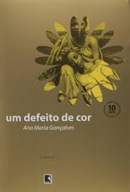
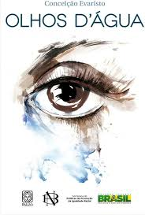
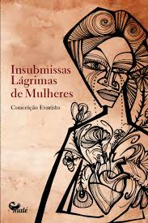
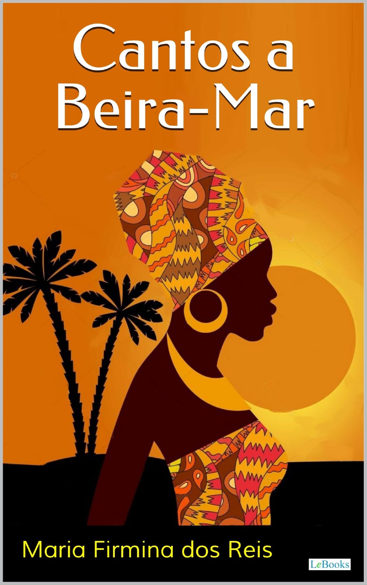

Bem vindo ao site de demonstração dos livros apresentados
neste site você encontrar algumas obras das autoras que foram apresentadas nos slides deste grupo em forma de ebook´s disponivel para demonstração com intuito educacional incluindo as autoras:
Conceição Evaristo;
Maria Firmina dos Reis;
Ana Maria Gonçalves;

Resumo
A narrativa tem início no início do século XIX, em Savalu, na África (atual Benim). Após perder a mãe e o irmão, a protagonista Kehinde é sequestrada aos oito anos de idade junto com a avó e a irmã gêmea. Elas são traficadas para o Brasil em um navio negreiro, onde apenas Kehinde sobrevive à travessia.Vendida como escrava, ela passa a viver em uma fazenda na ilha de Itaparica, na Bahia. Lá, sofre abusos sexuais do seu senhor e engravida aos 13 anos.
Ao longo de sua vida adulta, Kehinde consegue conquistar a alforria. Ela se muda para Salvador, onde trabalha, prospera e se torna uma mulher financeiramente independente e influente.
Abrir Ebook

Resumo
Olhos d'Água (o conto que dá título ao livro): Narra a busca de uma filha pela cor dos olhos da própria mãe. Ao reencontrá-la e vê-la chorar, a narradora percebe que os olhos da mãe refletem a dor, as lágrimas e a luta da vida, simbolizando também a sua própria ancestralidade e identidade
Abrir Ebook

Resumo
Insubmissas lágrimas de mulheres, da escritora brasileira Conceição Evaristo, é uma antologia composta por 13 contos. A obra narra a trajetória de mulheres negras e periféricas, explorando suas lutas contra a violência doméstica, o racismo, o machismo e as desigualdades sociais. Os relatos funcionam como depoimentos em que a dor e a resistência se transformam em ferramentas de libertação e afeto.
Abrir Ebook

Resumo
Insubmissas lágrimas de mulheres, da escritora brasileira Conceição Evaristo, é uma antologia composta por 13 contos. A obra narra a trajetória de mulheres negras e periféricas, explorando suas lutas contra a violência doméstica, o racismo, o machismo e as desigualdades sociais. Os relatos funcionam como depoimentos em que a dor e a resistência se transformam em ferramentas de libertação e afeto.
Abrir Ebook
.jpg)
Resumo
A jovem e bondosa Úrsula vive com sua mãe, Dona Luíza, isoladas no interior. A história começa quando Tancredo, um jovem nobre, sofre um acidente a cavalo e é socorrido pelo escravizado Túlio. Acolhido na casa de Úrsula, ele se apaixona pela jovem, que também passa a amá-lo.Porém, o amor dos dois é ameaçado pelo vilão Comendador Fernando, tio de Úrsula, um homem cruel e ambicioso que deseja casar com a sobrinha a todo custo.
Abrir Ebook
Quiz!
um quiz para testar seu conhecimeto sobre o que foi falado na apresentação e sobre as obras
Começar Quiz